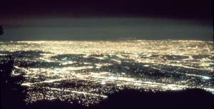

INTERNATIONAL DARK-SKY ASSOCIATION
Los Angeles. The human footprint on Earth is evident, even from space. Simple steps can reduce the light pollution that prevents us from fully enjoying the night sky.